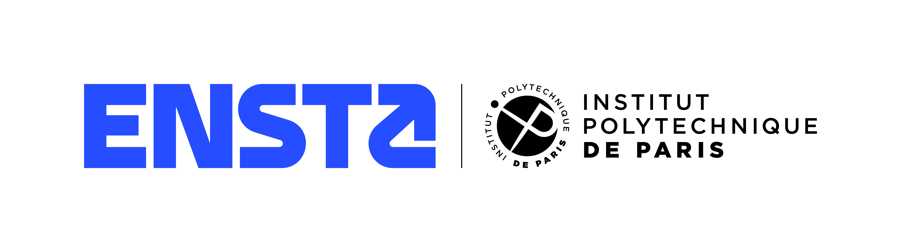
I combine mechanical structural design (CAD/RDM) with testing instrumentation (Python, 3D measurement) and control systems. Currently seeking a 3-4 month Assistant Engineer internship abroad in the aerospace sector (propulsion, pyromechanics, testing, and integration).
English B2 (TOEIC 830)
Spanish A2
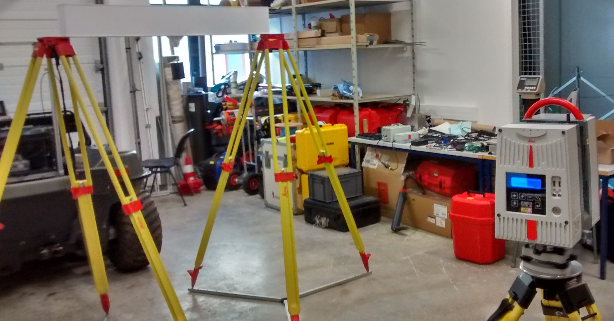
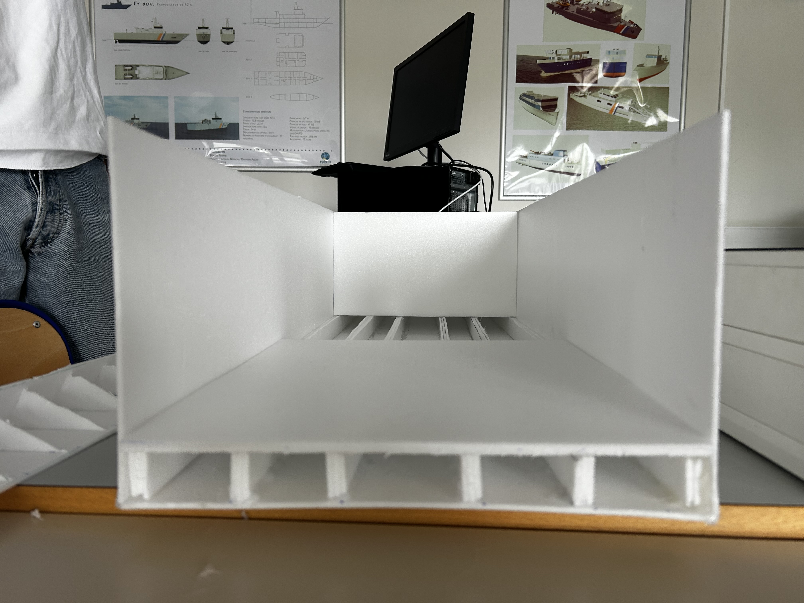
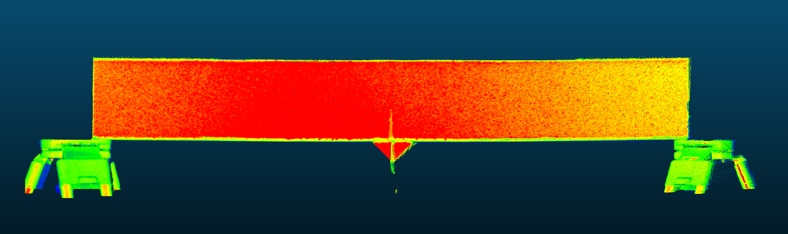
RDM sizing of a reinforced hull (Euler-Bernoulli, Von Mises criterion) fully validated experimentally. I characterized the Young's modulus of Depron using a 3-point bending test instrumented with a Leica HDS 6200 3D laser scanner.
Developed a navigation and control system for an Autonomous Surface Vehicle (ASV). Key milestones: Custom teleoperation simulator, GPS trajectory mapping (Google Earth), magnetometer calibration (ellipsoid correction & heading estimation via TCP/IP Python Sockets), and implementation of a control law for waypoint navigation using differential thrust.
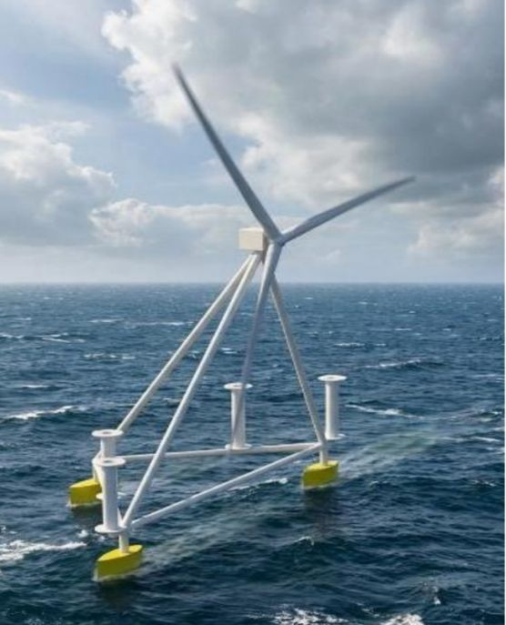
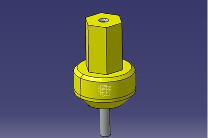
Designed a connector deployment system for floating offshore wind turbines (Student Project for Windion). Key challenges solved: Swell compensation, stress reduction, and maintaining a dry electrical interface. Developed multiple kinematic architectures and finalized the design using a rigorous multi-criteria decision matrix.
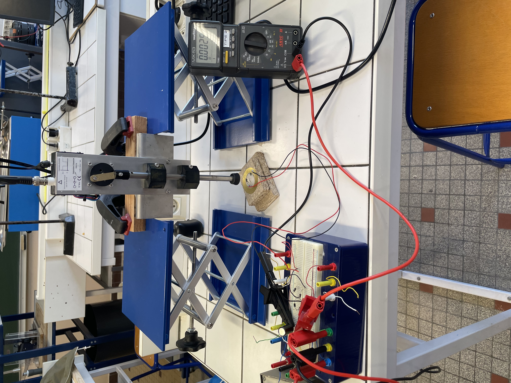
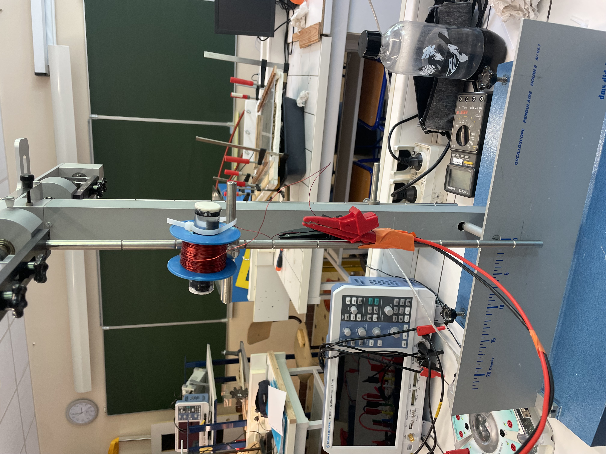
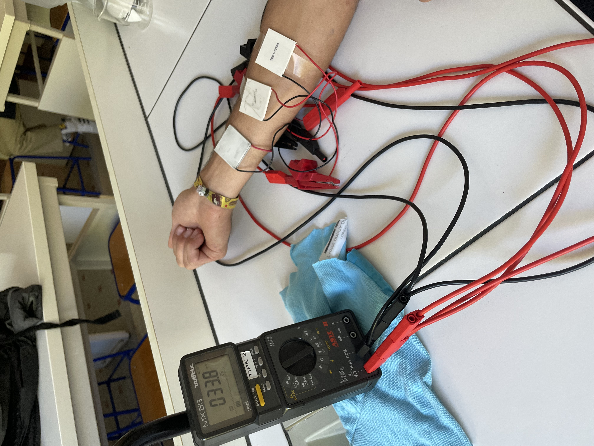
Comparative study of energy harvesting technologies (Peltier module, electromagnetic converter, piezoelectric). Designed, soldered and prototyped a custom piezoelectric shoe sole capable of generating 0.2 mW during a run.
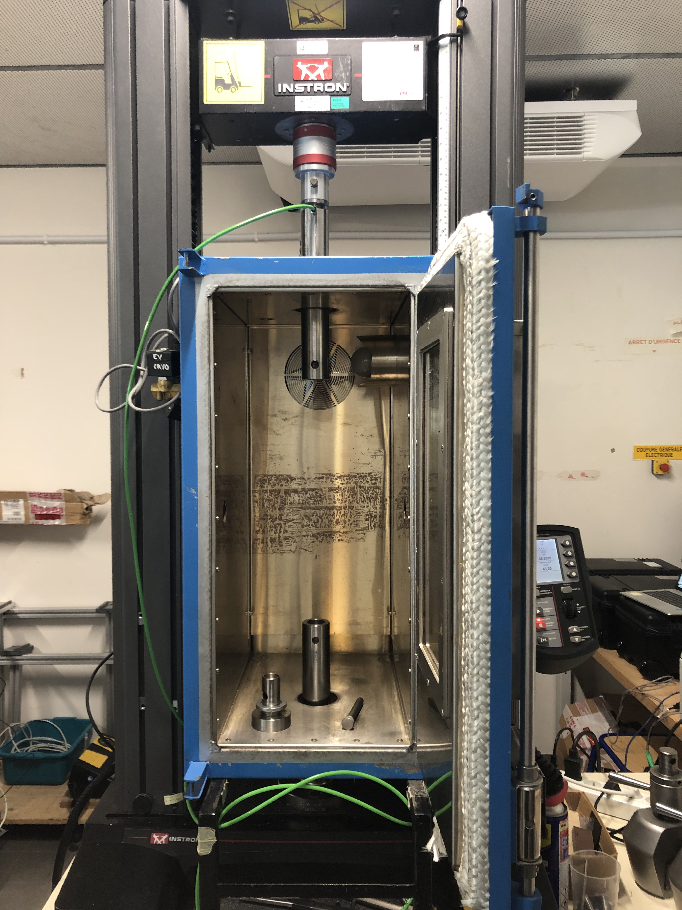
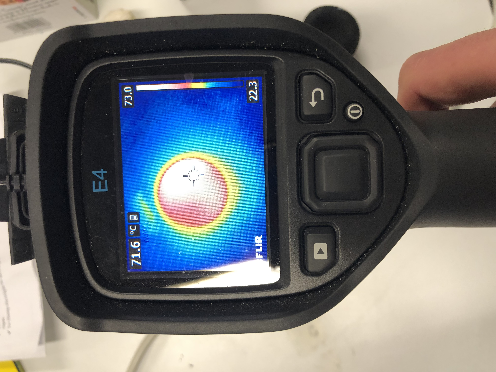
Advanced mechanical testing on squash balls (traction, compression, restitution) conducted at the IRDL — CNRS UMR 6027 research center using an Instron machine and FLIR thermal imaging.